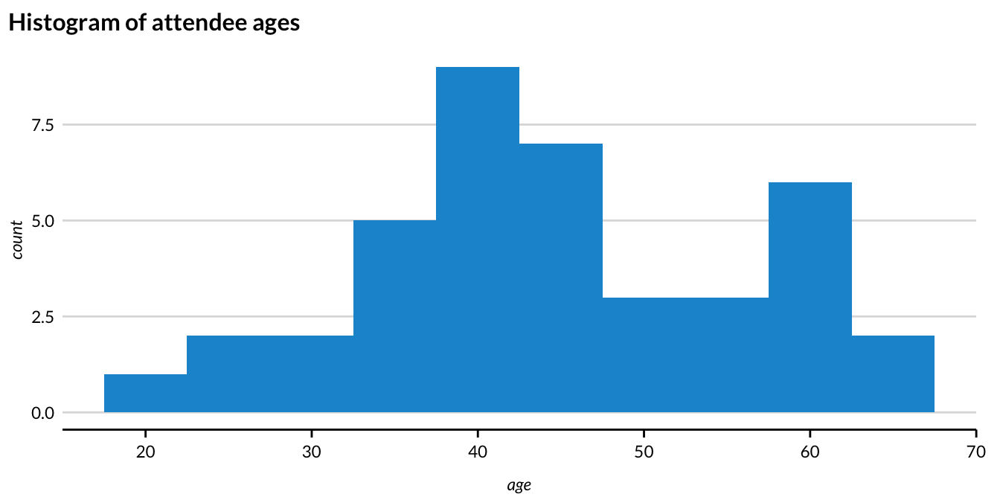
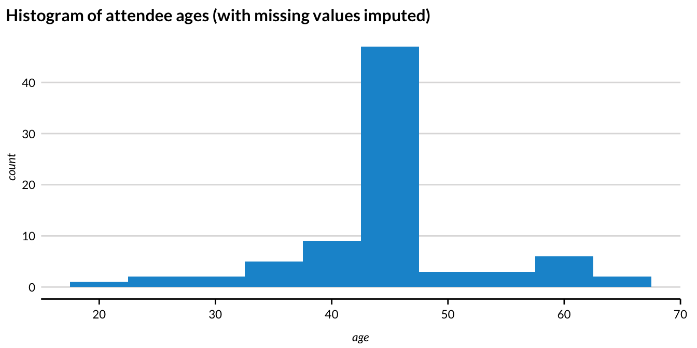

| species | bill_length_mm | sex |
|---|---|---|
| Chinstrap | 51.3 | male |
| Gentoo | 44.0 | female |
| Chinstrap | 51.4 | male |
| Chinstrap | 45.4 | female |
| Adelie | 36.2 | female |
2 Synthetic Data
Synthetic data
Synthetic data consists of pseudo or “fake” records that can be statistically representative of the confidential data.
- The goal of most syntheses is to closely mimic the underlying distribution and statistical properties of the real data to preserve data utility while minimizing disclosure risks.
- Synthesized values also limit an intruder’s confidence, because they cannot confirm a synthetic value exists in the confidential dataset.
- Synthetic data may be used as a “training dataset” to develop programs to run on confidential data via a validation server.
Partially synthetic
Partially synthetic data only synthesizes some observations or variables in the released data (generally those most sensitive to disclosure). In partially synthetic data, there remains a one-to-one mapping between confidential records and synthetic records.
In Figure 2.1, we see an example of what a partially synthesized version of the above confidential data could look like.

Fully synthetic
Fully synthetic data synthesizes all values in the dataset with imputed amounts. Fully synthetic data no longer directly map onto the confidential records, but remain statistically representative. Since fully synthetic data does not contain any actual observations, it protects against both attribute and identity disclosure.
In Figure 2.2, we see an example of what a fully synthesized version of the confidential looks like.

2.1 Exercise 1
Consider the penguins data from earlier.
Let’s say that researchers decide that the sex of the penguins in the data are not confidential, but the species and bill length are. So, they develop regression models that predict species conditional on sex and predict bill_length conditional on species and sex. They then use those models to predict species and bill lengths for each row in the data and then release it publicly.
What specific Statistical Disclosure Control method are these researchers using?
What specific Statistical Disclosure Control method are these researchers using?
They are using partially synthetic data.
2.2 Exercise 2
A researcher has confidential data on a population. To protect the privacy of respondents, the researcher releases a synthetic version of the data. A data attacker then runs a record linkage attack against the synthetic data and is able to accurately identify 5 individuals in the data. Based on this information, can you tell whether the researcher released fully or partially synthetic data? Why or why not?
A researcher has confidential data on a population. To protect the privacy of respondents, the researcher releases a synthetic version of the data. A data attacker then runs a record linkage attack against the synthetic data and is able to accurately identify 5 individuals in the data. Based on this information, can you tell whether the researcher released fully or partially synthetic data? Why or why not?
Record linkage attacks are only possible for partially synthetic data, though other types of disclosure risk still apply to fully synthetic data.
2.3 Synthetic Data <-> Imputation Connection
- Multiple imputation was originally developed to address non-response problems in surveys (Rubin 1977).
- Statisticians created new observations or values to replace the missing data by developing a model based on other available respondent information.
- This process of replacing missing data with substituted values is called imputation.
2.3.1 Imputation Example
Imagine you are running a conference with 80 attendees. You are collecting names and ages of all your attendees. Unfortunately, when the conference is over, you realize that only about half of the attendees listed their ages. One common imputation technique is to just replace the missing values with the mean age of those in the data.
Figure 2.3 shows the distribution of the 40 age observations that are not missing.

Figure 2.4 shows the histogram after imputation.

- Using the mean to impute the missing ages removes useful variation and conceals information from the “tails” of the distribution.
- Simply put, we used a straightforward model (replace the data with the mean) and sampled from that model to fill in the missing values.
- When creating synthetic data, this process is repeated for an entire variable, or set of variables.
- In a sense, the entire column is treated as missing!
2.4 Sequential Synthesis
A more advanced implementation of synthetic data generation estimates models for each predictor with previously synthesized variables used as predictors. This iterative process is called sequential synthesis or fully conditional specification (FCS). This allows us to easily model multivariate relationships (or joint distributions) without being computationally expensive.
The process described above may be easier to understand with the following table:
| Step | Outcome | Modelled with | Predicted with |
|---|---|---|---|
| 1 | Sex | — | Random sampling with replacement |
| 2 | Age | Sex | Sampled Sex |
| 3 | Social Security Benefits | Sex, Age | Sampled Sex, Sampled Age |
| — | — | — | — |
- We can select the synthesis order based on the priority of the variables or the relationships between them.
- The earlier in the order a variable is synthesized, the better the original information is preserved in the synthetic data usually.
- (Bowen, Liu, and Su 2021) proposed a method that ranks variable importance by either practical or statistical utility and sequentially synthesizes the data accordingly.
2.5 Parametric vs. Nonparametric Data Generation Process
Parametric data synthesis is the process of data generation based on a parametric distribution or generative model.
Parametric models assume a finite number of parameters that capture the complexity of the data.
They are generally less flexible, but more interpretable than nonparametric models.
Examples: regression to assign an age variable, sampling from a probability distribution, Bayesian models, or copula based models.
Nonparametric data synthesis is the process of data generation that is not based on assumptions about an underlying distribution or model.
Often, nonparametric methods use frequency proportions or marginal probabilities as weights for some type of sampling scheme.
They are generally more flexible, but less interpretable than parametric models.
Examples: assigning gender based on underlying proportions, CART (Classification and Regression Trees) models, RNN models, etc.
Important: Synthetic data are only as good as the models used for imputation!
2.6 Implicates
Researchers can create any number of versions of a partially synthetic or fully synthetic dataset. Each version of the dataset is called an implicate. These can also be referred to as replicates or simply “synthetic datasets”
- For partially synthetic data, non-synthesized variables are the same across each version of the dataset.
Multiple implicates are useful for understanding the uncertainty added by imputation and are required for calculating valid standard errors.
More than one implicate can be released for public use; each new release, however, increases disclosure risk (but allows for more complete analysis and better inferences, provided users use the correct combining rules).
Implicates can also be analyzed internally to find which version(s) of the dataset provide the most utility in terms of data quality.
2.7 Exercise 3: Sequential Synthesis
You have a confidential dataset that contains information about dogs’ weight and their height. You decide to sequentially synthesize these two variables and write up your method below. Can you spot the mistake in writing up your method?
To create a synthetic record, first synthetic pet weight is assigned based on a random draw from a normal distribution with mean equal to the average of confidential weights, and standard deviation equal to the standard deviation of confidential weights. Then the confidential
heightis regressed on the syntheticweight. Using the resulting regression coefficients, a syntheticheightvariable is generated for each row in the data using just the syntheticweightvalues as an input.
You have a confidential dataset that contains information about dogs’ weight and their height. You decide to sequentially synthesize these two variables and write up your method below. Can you spot the mistake in writing up your method?
To create a synthetic record, first synthetic pet weight is assigned based on a random draw from a normal distribution with mean equal to the average of confidential weights, and standard deviation equal to the standard deviation of confidential weights. Then the confidential
heightis regressed on the syntheticweight. Using the resulting regression coefficients, a syntheticheightvariable is generated for each row in the data using just the syntheticweightvalues as an input.
Height should be regressed on the confidential values for weight, rather than the synthetic values for weight
2.8 Exercise 4: Multiple Implicates
What are the privacy implications for releasing multiple versions of a synthetic dataset (implicates)? Do these implications change for partially vs. fully synthetic data?
What are the privacy implications for releasing multiple versions of a synthetic dataset (implicates)? Do these implications change for partially vs. fully synthetic data?
Releasing multiple implicates improves transparency and analytical value, but increases disclosure risk (violates “security through obscurity”).
It is more risky to release partially synthetic implicates, since non-synthesized records are the same across each dataset and there remains a 1-to-1 relationship between confidential and synthesized records.
2.9 Exercise 5: Partial vs. fully synthetic
Shown here are the first seven rows of a dataset about the prices and attributes of diamonds. Suppose you decide to synthesize the “price” variable, because that information is too sensitive for public release.
| price | carat | cut | color | clarity |
|---|---|---|---|---|
| 326 | 0.23 | Ideal | E | SI2 |
| 326 | 0.21 | Premium | E | SI1 |
| 327 | 0.23 | Good | E | VS1 |
| 334 | 0.29 | Premium | I | VS2 |
| 335 | 0.31 | Good | J | SI2 |
| 336 | 0.24 | Very Good | J | VVS2 |
| 336 | 0.24 | Very Good | I | VVS1 |
After you synthesize the price variable, would the resulting dataset be considered partially or fully synthetic?
What are the trade-offs of a partially synthetic dataset compared to a fully synthetic dataset?
Describe in words how you would synthesize the “price” variable. Is the method you described parametric or non-parametric? Why?
After you synthesize the price variable, would the resulting dataset be considered partially or fully synthetic?
Partially synthetic
What are the trade-offs of a partially synthetic dataset compared to a fully synthetic dataset?
Changing only some variables (partial synthesis) in general leads to higher utility in analysis since the relationships between variables are by definition unchanged (Drechsler et al, 2008).
Disclosure in fully synthetic data is challenging because all values are imputed, while partial synthesis has higher disclosure risk since confidential values remain in the dataset (Drechsler et al, 2008).
- Note that while the risk of disclosure for fully synthetic data is very low, it is not zero.
Accurate and exhaustive specification of variable relationships and constraints in fully synthetic data is difficult and if done incorrectly can lead to bias (drechslerjorgcomparingsynthetic?).
- If a variable is synthesized incorrectly early in a sequential synthesis, all variables synthesized on the basis of that variable will be affected.
Partially synthetic data may be publicly perceived as more reliable than fully synthetic data.
Describe in words how you would synthesize the “price” variable. Is the method you described parametric or non-parametric? Why?
2.10 Exercise 6
For this exercise, we will use the starwars dataset from the dplyr package. We will practice sequentially synthesizing a binary variable (gender) and a numeric variable (height).
# run this to get the dataset we will work with
starwars <- dplyr::starwars |>
select(gender, height) |>
drop_na()
starwars |>
head() |>
create_table()| gender | height |
|---|---|
| masculine | 172 |
| masculine | 167 |
| masculine | 96 |
| masculine | 202 |
| feminine | 150 |
| masculine | 178 |
Part 1: Gender synthesis
Fill in the blanks in the following code to synthesize the gender variable using the underlying distribution present in the data.
# set a seed so pseudo-random processes are reproducible
set.seed(20220301)
# Fill in the blanks!
# vector of gender categories
gender_categories <- c("feminine", "masculine")
# size of sample to generate
synthetic_data_size <- nrow(starwars)
# probability weights
gender_probs <- starwars |>
count(gender) |>
mutate(relative_frequency = ### ______) |>
pull(relative_frequency)
# use sample function to generate synthetic vector of genders
gender_synthetic <- sample(
x = ###_____,
size = ###_____,
replace = ###_____,
prob = ###_____
)
# create starwars_synthetic dataset using generated variable
starwars_synthetic <- tibble(
gender = gender_synthetic
)Part 2: Height synthesis
Similarly, fill in the blanks in the code to generate the height variable using a linear regression with gender as a predictor.
# set a seed so pseudo-random processes are reproducible
set.seed(20220301)
# Fill in the blanks!
# linear regression
height_lm <- lm(
formula = ###_____,
data = ###______
)
# predict flipper length with model coefficients
height_predicted <- predict(
object = height_lm,
newdata = ###_____
)
# synthetic column using normal distribution centered on predictions with sd of residual standard error
height_synthetic <- rnorm(
n = ###_______,
mean = ###______,
sd = ###______
)
# add new values to synthetic data as height
starwars_synthetic <- starwars_synthetic |>
mutate(height = height_synthetic)Fill in the blanks in the following code to synthesize the gender variable using the underlying distribution present in the data.
# set a seed so pseudo-random processes are reproducible
set.seed(20220301)
# Fill in the blanks!
# vector of gender categories
gender_categories <- c("feminine", "masculine")
# size of sample to generate
synthetic_data_size <- nrow(starwars)
# probability weights
gender_probs <- starwars |>
count(gender) |>
mutate(relative_frequency = n / synthetic_data_size) |>
pull(relative_frequency)
# use sample function to generate synthetic vector of genders
gender_synthetic <- sample(
x = gender_categories,
size = synthetic_data_size,
replace = TRUE,
prob = gender_probs
)
# create starwars_synthetic dataset using generated variable
starwars_synthetic <- tibble(
gender = gender_synthetic
)Part 2: Height synthesis
Similarly, fill in the blanks in the code to generate the height variable using a linear regression with gender as a predictor.
# set a seed so pseudo-random processes are reproducible
set.seed(20220301)
# Fill in the blanks!
# linear regression
height_lm <- lm(
formula = height ~ gender,
data = starwars
)
# predict flipper length with model coefficients
height_predicted <- predict(
object = height_lm,
newdata = starwars_synthetic
)
# synthetic column using normal distribution centered on predictions with sd of residual standard error
height_synthetic <- rnorm(
n = synthetic_data_size,
mean = height_predicted,
sd = sigma(height_lm)
)
# add new values to synthetic data as height
starwars_synthetic <- starwars_synthetic |>
mutate(height = height_synthetic)2.11 Suggested Reading - Synthetic Data
Snoke, J., Raab, G. M., Nowok, B., Dibben, C., & Slavkovic, A. (2018). General and specific utility measures for synthetic data. Journal of the Royal Statistical Society: Series A (Statistics in Society), 181(3), 663-688. link
Bowen, C. M., Bryant, V., Burman, L., Czajka, J., Khitatrakun, S., MacDonald, G., … & Zwiefel, N. (2022). Synthetic Individual Income Tax Data: Methodology, Utility, and Privacy Implications. In International Conference on Privacy in Statistical Databases (pp. 191-204). Springer, Cham. link
Raghunathan, T. E. (2021). Synthetic data. Annual Review of Statistics and Its Application, 8, 129-140. link